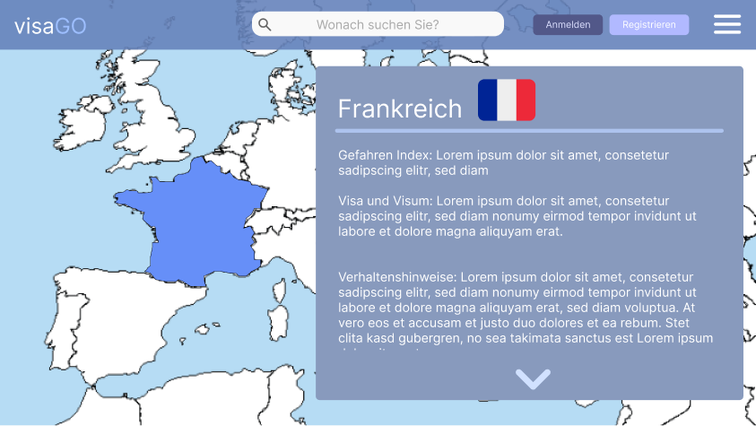

visaGo
visaGO is an innovative platform that provides travelers with a comprehensive overview of global entry requirements, safety information, and necessary preparations. The application combines detailed country information with an intuitive, interactive map view, enabling users to make informed travel decisions without having to navigate through various sources of information. This project was developed jointly as part of the Agile Development Methods module with: Duy Tran, Emma Inderbiethen, Fabian Mc Quade, Gregor Gräser, Jan Knipping, Marlon Noldin, Aimen Fehmi Ouezen, Nils Haarnagel, and Thies Boll.
Screenshot

What I built
- Login page
- Register page
- Reset password page
- Verify email page
Key features
- Interactive world map with color-coded security levels
- Detailed overview of entry requirements, visa requirements, and necessary vaccinations Current safety information and risk scores for every country worldwide
- User registration with personalized settings
- Intelligent search function with automatic error correction
Technology details
- Framework: Flutter (Dart) mobile for Android and IOS + web
- Backend & Services: Firebase (Cloud Firestore, Authentication)
- API: Seamless connection to the official API of the Federal Foreign Office — Visit the Federal Foreign Office